Описание релизов продукта iikoDeliveryWidget
01.01.2018
- Добавлена поддержка стоп-листов. Система регулярно получает информацию о стоп-листах из iiko и отображает информацию о стопах на сайте
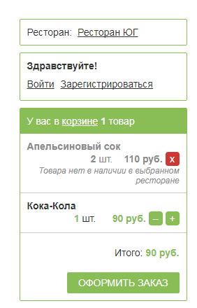
- Добавлена поддержка платежной системы “Альфа-Банк Украина”

01.12.2017
- Расширена интеграция с iikoCard5 по купонам и подсказкам


01.09.2017
- Добавлен блок поиска товаров по названию

01.08.2017
- Сделана интеграция с услугой доставки. Виджет умеет делать запрос в iiko и определять, если доставка в данную зону является платной.
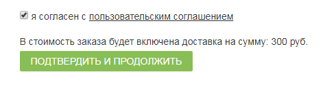

01.07.2017
- Сделана интеграция с Белорусской платежной системой BePaid
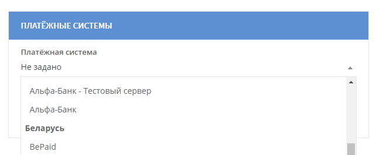
01.05.2017
- Добавлена поддержка с платежной системой “РФИ-банк”
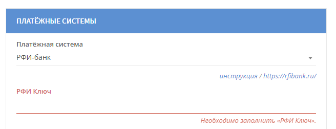
- Добавлена поддержка работы с платежной системой “BePaid”

01.01.2017
- Добавлена поддержка работы с платежной системой “Сбербанк”

- Показываются подсказки по улицам в ресторанах, которые не подключены к КЛАДР (все рестораны вне России). Улицы берутся из iiko.
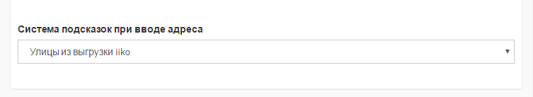
01.12.2016
- Добавлена возможность динамической подгрузки товаров. При заданном режиме товары будут подгружаться на страницу в ходе пролистывания пользователем.
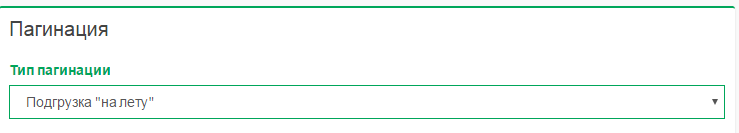
01.11.2016
- Добавлена возможность шаблонизации писем, которые отправляются пользователям
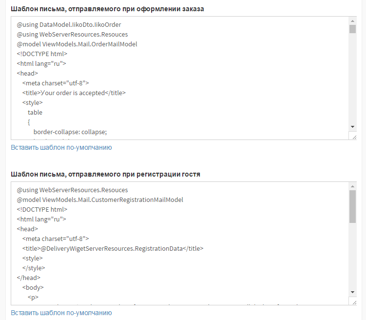
01.10.2016
- Фейслифтинг базовой верстки виджета


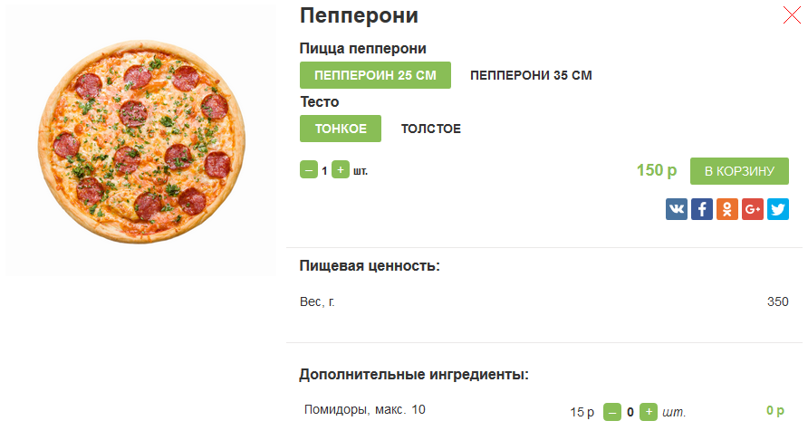
- Сделана интеграция с платежной системой Альфа-банк

01.09.2016
- Сделана поддержка банка WordPay (http://www.worldpay.com/)
02.07.2016
- Сделали интеграцию с британской системой адресов - поддержимаем ввод адресов через индексы

02.06.2016
- Добавлена возможность настройки количества цифр в номере клиента после кода. Эта возможность позволяет клиентам вводить номера для городов, в которых используется пятизначный или шестизначный формат номера

- Система научилась определять местоположение клиента и автоматически подставлять нужный город по его геопозиции.

02.05.2016
- Система теперь умеет применять акции Platius/iikoCard5 еще на этапе оформления заказа (до ввода телефона). Для этого надо указать параметр “Телефон по умолчанию”
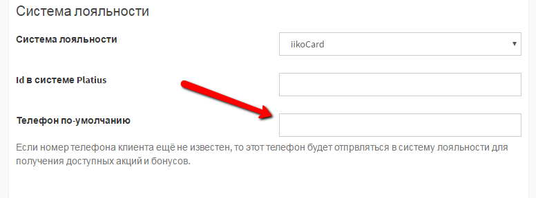
- Теперь можно указать список категорий товаров, при наличии которых будет запрещена оплата картами с сайта.
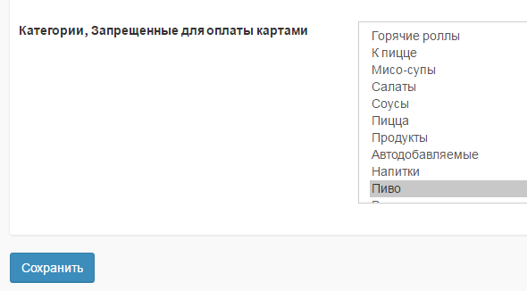
- Добавлена возможность верификации пользовательского номера. Для этого нужно, чтобы был подключен пакт смс-нотификаций для программы iikoDelivery.

03.04.2016
- Сделана поддержка разных цен в разных ресторанах. Данная возможность важна для ресторанов у которых есть города с разными ценами.
- Добавлена возможность “расшаривания” в социальных сетях информации о товарах.

- Расширено колличество встроенных тегов
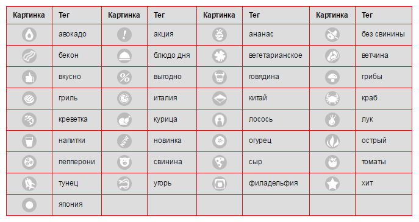
03.02.2016
- Добавлена возможность отображения адреса ресторана при самовывозе. Это поможет гостям соориентироваться откуда надо забирать заказ. Для того, чтобы появилась ссылка нужно задать поле “Адрес” в терминале доставки и обновить справочники.

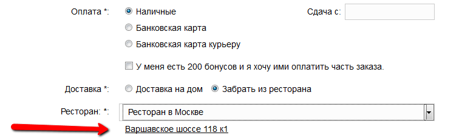
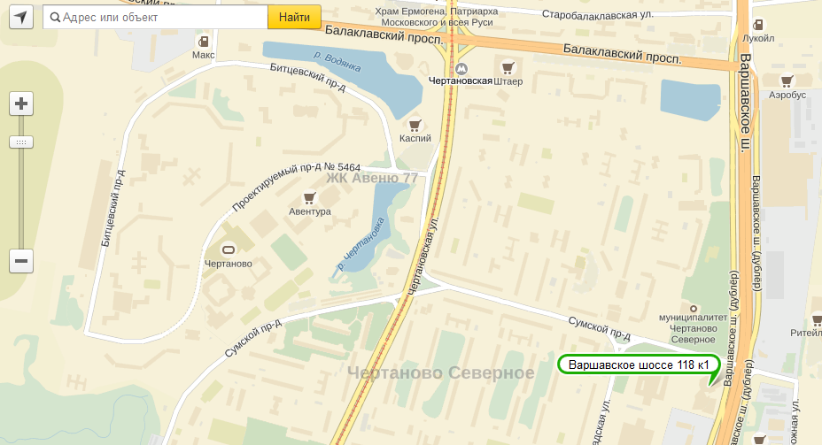
- Добавлена возможность пагинации в рамках виджета. Эта возможность полезна, если в меню Вашего ресторана очень много блюд. Для активации этой возможности нужно включить соответствующую опцию в настройках ресторана.
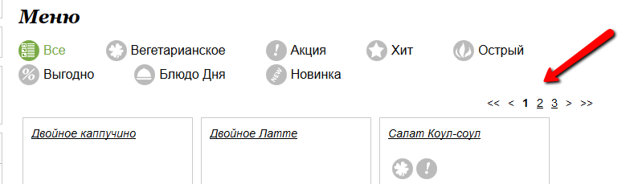
27.12.2015
- Тесная интеграция с Google Analitics. В Google Analitics можно отслеживать конверсии, воронки продаж и достижение целей по пользователям
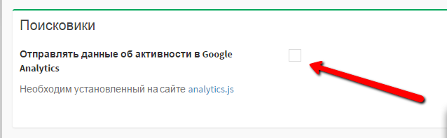
27.11.2015
- Добавлена возможность требования у пользователей согласия на обработку персональных данных. Для того, чтобы пользователи соглашались с регламентом Вашего сайта и давали разрешение на обработку персональных данных следует добавить ссылку на регламент и включить настройку “требовать обработку персональных данных”.

27.10.2015
- Добавлены картинки для тегов, которые часто используются в ресторане. Подробнее можно прочитать в статье по ссылке
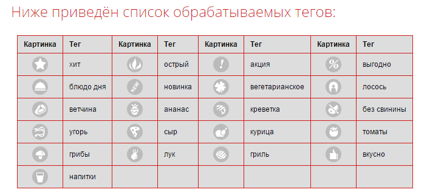
- Добавлена возможность создания нескольких сайтов, привязанных к одной системе iikoRMS. Это может быть полезно для ситуации, когда Вы создаете один сайт под концепцию пиццы, а другой под концепцию японских блюд, но при этом кухня, служба доставки и коллцентр общий.
27.09.2015
- Добавлены региональные настройки сайта - телефонный код страны и краткое обозначение валюты.

- Добавлена возможность включения на сайт блока ресторана, из которого предполагается везти заказ. Опция полезна для ситуации, когда один коллцентр обслуживает несколько городов.
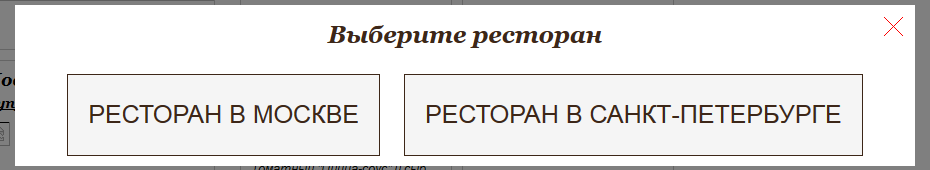

Подробнее можно прочитать по ссылке
- Добавлен блок “также попробуйте”. В этом блоке размещаются товары, которые следует рекомендовать клиентам на основе их корзин. Например если гость заказал пиццу, то разумно порекомендовать ему соус к пицце, а если в заказе нет напитков, то нужно предложить напиток гостю.

Подробнее по ссылке
27.09.2015
- Оптимизация производительности загрузки страниц виджета и картинок.
27.08.2015
- Добавлена возможность приема банковских карт через систему PayOnline. Подробнее по ссылке
- Сделана возможность автоматической локализации на английский язык

27.07.2015
- Добавлена клиентская панель администрирования виджета, переход в панель происходит через портал iiko.Biz. Для этого нужно зайти в раздел “Приложения”, выбрать приложение “iikoDeliveryWidget” и нажать на кнопку “Настройка”. Подробнее по ссылке.

27.05.2015
- Добавлена возможность динамического формирования страниц, с выводом товаров отдельной категории. Эта возможность полезна для SEO-оптимизации (лендинг для пирогов, лендинг для пиццы, лендинг для суши). Подробнее можно прочитать по ссылке.


27.04.2015
- Добавлена поддержка индексации динамических страниц виджета. Виджет полностью поддерживает требования поисковых систем Яндекс и Google. Подробнее про настройку SEO-индексирования можно прочитать по ссылке.
27.03.2015
- Добавлена интеграция со справочником реклам из iikoRMS
- Добавлена возможность отображения карточек товаров на отдельной странице
27.02.2015
- Добавлен раздел “хлебные крошки”, в нем отображается путь к товару от корня до текущей категории. Подробнее про настройку блока можно прочитать по ссылке

27.01.2015
- Добавлена интеграция с модулем “График и картография” iikoDelivery. Теперь сайт ресторана может проверять ровно те же настройки что и iikoDelivery - вхождение адреса в зону доставки, попадание в график работы ресторана, соответствие на минимальную сумму, нахождение товара в стоп-листе и.т.д
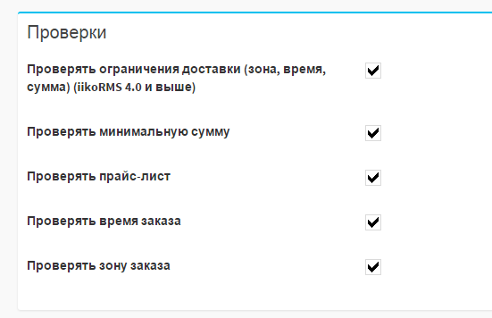
- URL-ы, генерируемые виджетом обрели формат “человекопонятных”, для генерации адресов используется транслитерация названий категорий и блюд.

27.12.2014
- Добавлена возможность отображения блока “Лови момент”. Блок используется для продажи клиентам блюд по спец.цене, при условии, что они закажут это блюдо за ограниченное время. Подробнее о настройке этого блока можно прочитать в разделе, посвященному подключению системы Platius и в разделе, посвященному подключению виджета на сайт.
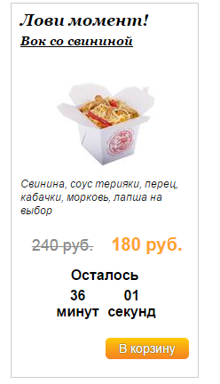
27.11.2014
- Добавлена интеграция с Platius. Пользователь на сайте может оплатить баллами, получить скидки и подарки. Подробнее про интеграцию можно прочитать по ссылке.
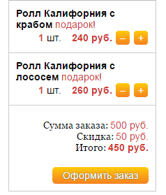


27.10.2014
- Добавлен личный кабинет для гостей ресторана. В личном кабинете отображается имя гостя, его телефон, его email и история его заказов
27.09.2014
- Сделана интеграция со справочником КЛАДР. Для городов России виджет умеет выдавать подсказку по улицам и адресам.